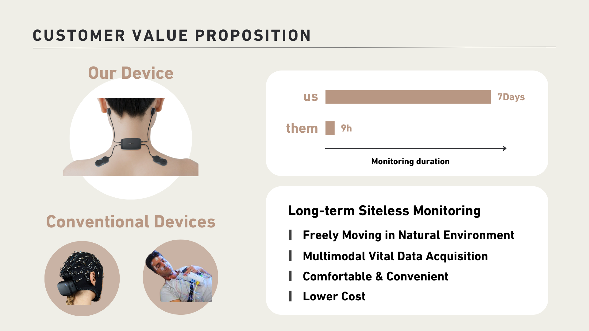

CHRO+
CHRO+ [ ˈkroʊ plʌs ] is revolutionizing clinical trials with its groundbreaking XHRO device and service plan. Our technology empowers patients to participate in clinical trials from the comfort of their homes, making research more accessible and efficient.

The XHRO Device and Service Plan
XHRO Device
The XHRO device is a cutting-edge medical device designed for easy and accurate data collection from patients during clinical trials. It allows researchers to collect data in real-time, remotely, and with greater precision. The XHRO device integrates seamlessly with our comprehensive service plan.
Patent Number: WO/2024/090527, PCT/JP2023/038745
Service Plan
Our service plan includes everything you need to successfully run a clinical trial, from device setup and training to data management and analysis. Our team of experts provides ongoing support and guidance, ensuring the success of your research project.

Market Size and Growth Potential
Global Market Size
The global clinical trial market is a multi-billion dollar industry with a strong growth trajectory. The adoption of telehealth solutions is driving significant market expansion.
Annual Growth Rate
The market is expected to grow at an average annual rate of over 15% in the coming years, as demand for innovative clinical trials solutions increases.
Our Experienced Team
Haruo Mizutani - Team Lead
Takuya Abe - Service Designer
Katsuhito Matsushima - Fullstack Engineer
Keita Nakata - Vital Data Analyst
Vision
Our vision is to transform the future of clinical trials by integrating cutting-edge technology that brings trials directly to patients’ homes, making research faster, more efficient, and more accessible to people everywhere.
-->